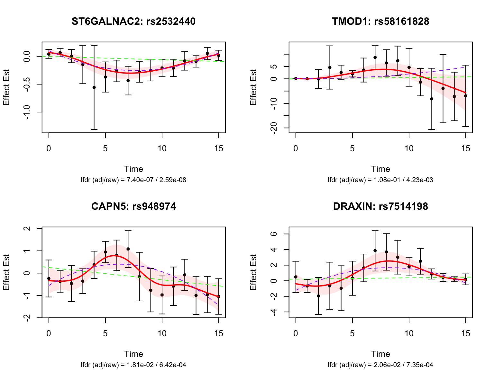
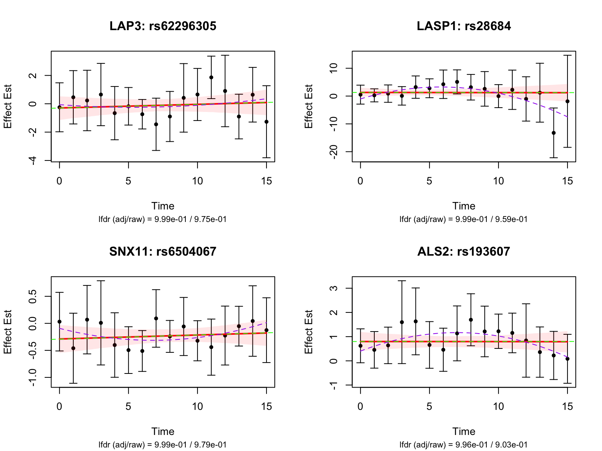
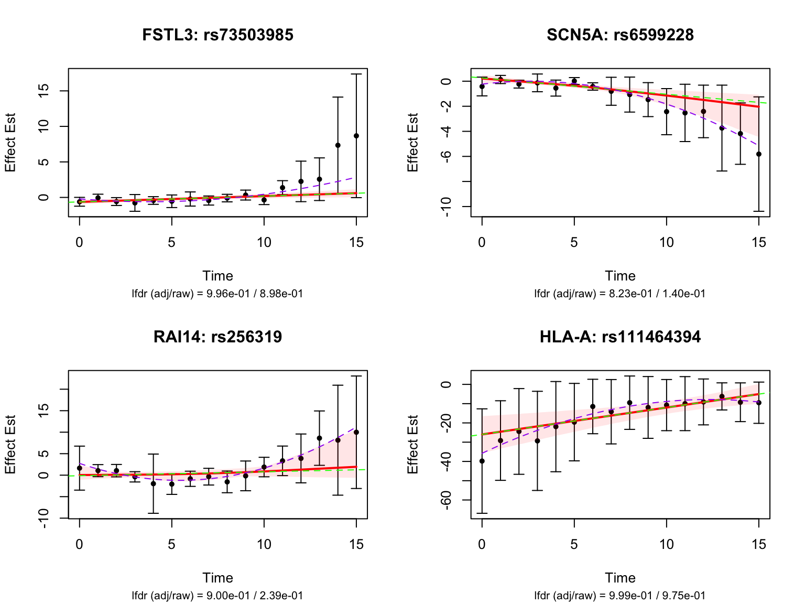
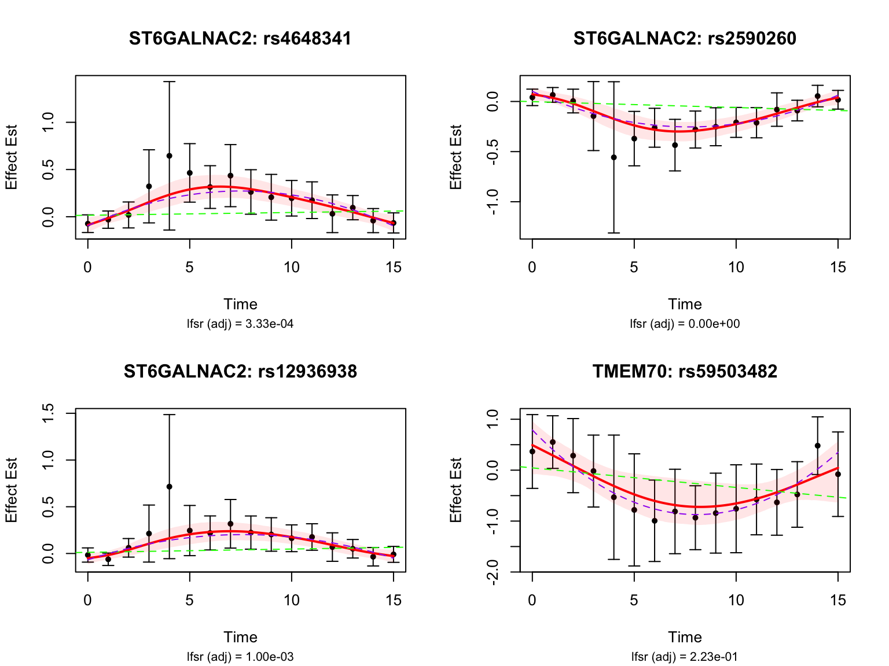
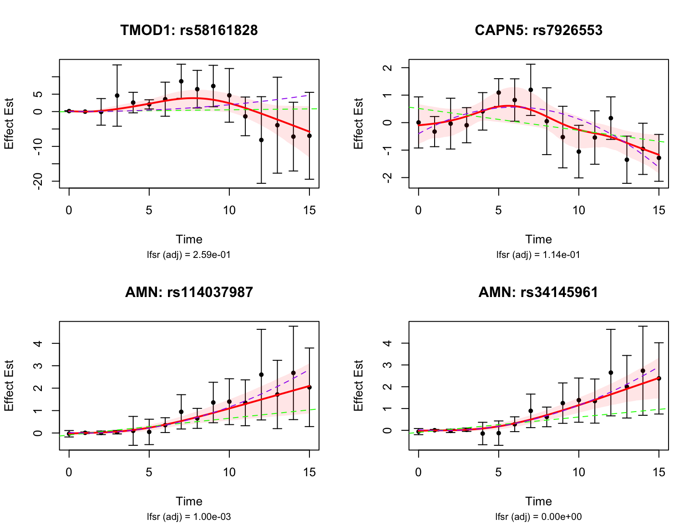
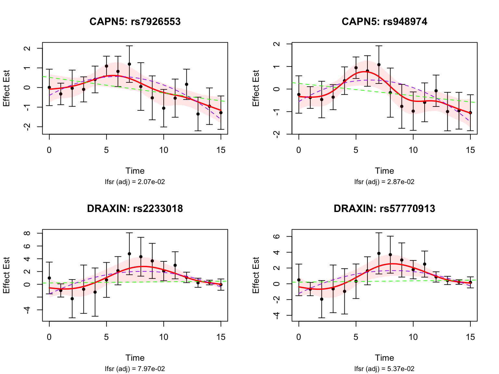

Last updated: 2026-08-26
Checks: 5 2
Knit directory: coderepo-local/
This reproducible R Markdown analysis was created with workflowr (version 1.7.2). The Checks tab describes the reproducibility checks that were applied when the results were created. The Past versions tab lists the development history.
The R Markdown file has unstaged changes. To know which version of
the R Markdown file created these results, you’ll want to first commit
it to the Git repo. If you’re still working on the analysis, you can
ignore this warning. When you’re finished, you can run
wflow_publish to commit the R Markdown file and build the
HTML.
The global environment had objects present when the code in the R
Markdown file was run. These objects can affect the analysis in your R
Markdown file in unknown ways. For reproduciblity it’s best to always
run the code in an empty environment. Use wflow_publish or
wflow_build to ensure that the code is always run in an
empty environment.
The following objects were defined in the global environment when these results were created:
| Name | Class | Size |
|---|---|---|
| all_genes | character | 447.4 Kb |
| alpha | numeric | 56 bytes |
| code_dir | character | 232 bytes |
| data_dir | character | 232 bytes |
| datasets | list | 1.5 Gb |
| early_genes | list | 48 bytes |
| early_indices | integer | 48 bytes |
| enrich_set | function | 97.8 Kb |
| fash_fit2 | fash | 2.3 Gb |
| fash_fit2_update | fash | 2.3 Gb |
| fash_highlighted2 | integer | 224 bytes |
| fash_highlighted2_before | integer | 688 bytes |
| fine_grid | numeric | 464 bytes |
| fmt_sci | function | 7.7 Kb |
| full_map | data.frame | 841.7 Kb |
| g_after | ggplot2::ggplot;ggplot;ggplot2::gg;S7_object;gg | 27.8 Mb |
| g_before | ggplot2::ggplot;ggplot;ggplot2::gg;S7_object;gg | 27.8 Mb |
| gene_fashr_only | character | 336 bytes |
| gene_missed | character | 54 Kb |
| genes_highlighted_strober_linear | character | 38.7 Kb |
| genes_highlighted_strober_nonlinear | character | 48.8 Kb |
| genes_highlighted2 | character | 752 bytes |
| genes_highlighted2_before | character | 2.6 Kb |
| genes_highlighted2_subset | character | 312 bytes |
| genes_highlighted2_subset_ens | character | 336 bytes |
| genes_not_highlighted2 | character | 446.7 Kb |
| i | integer | 56 bytes |
| idxs_late | integer | 64 bytes |
| idxs_middle | integer | 64 bytes |
| idxs_sw | integer | 56 bytes |
| late_genes | character | 480 bytes |
| late_indices | integer | 176 bytes |
| lfdr_adj_vec | numeric | 174.5 Kb |
| log_prec | numeric | 456 bytes |
| m_t2g | tbl_df;tbl;data.frame | 394.2 Kb |
| map | data.frame | 1.4 Kb |
| mart | Mart | 1.6 Mb |
| middle_genes | character | 336 bytes |
| middle_indices | integer | 176 bytes |
| pairs_highlighted_strober_linear | character | 464.5 Kb |
| pairs_highlighted_strober_nonlinear | character | 586.5 Kb |
| pairs_highlighted2 | character | 3.8 Kb |
| pairs_highlighted2_before | character | 13.7 Kb |
| pairs_not_highlighted2 | character | 84.7 Mb |
| pairs_of_selected_gene | character | 159.8 Kb |
| parse_pair_key | function | 3.9 Kb |
| plot_many_pairs_nonlinear | function | 6.7 Kb |
| plot_many_pairs_nonlinear_lfsr | function | 29.2 Kb |
| plot_pair_nonlinear_base | function | 191.9 Kb |
| result | enrichResult | 774.3 Kb |
| result_dir | character | 232 bytes |
| sample_int | function | 3.2 Kb |
| selected_gene | character | 120 bytes |
| selected_index | integer | 56 bytes |
| selected_indices | integer | 7.3 Kb |
| strober_linear | data.frame | 161.4 Mb |
| strober_linear_highlighted | data.frame | 1005.1 Kb |
| strober_nonlinear | data.frame | 161.4 Mb |
| strober_nonlinear_highlighted | data.frame | 1.2 Mb |
| switch_genes | character | 120 bytes |
| switch_indices | integer | 56 bytes |
| symbol_of | function | 28.3 Kb |
| test2 | list | 107.8 Mb |
| test2_before | list | 107.8 Mb |
| testing_early_nonlin_dyn | data.frame | 5.6 Kb |
| testing_late_nonlin_dyn | data.frame | 5.6 Kb |
| testing_middle_nonlin_dyn | data.frame | 5.6 Kb |
| testing_switch_nonlin_dyn | data.frame | 5.6 Kb |
The command set.seed(20251109) was run prior to running
the code in the R Markdown file. Setting a seed ensures that any results
that rely on randomness, e.g. subsampling or permutations, are
reproducible.
Great job! Recording the operating system, R version, and package versions is critical for reproducibility.
Nice! There were no cached chunks for this analysis, so you can be confident that you successfully produced the results during this run.
Great job! Using relative paths to the files within your workflowr project makes it easier to run your code on other machines.
Great! You are using Git for version control. Tracking code development and connecting the code version to the results is critical for reproducibility.
The results in this page were generated with repository version 55cacb9. See the Past versions tab to see a history of the changes made to the R Markdown and HTML files.
Note that you need to be careful to ensure that all relevant files for
the analysis have been committed to Git prior to generating the results
(you can use wflow_publish or
wflow_git_commit). workflowr only checks the R Markdown
file, but you know if there are other scripts or data files that it
depends on. Below is the status of the Git repository when the results
were generated:
Ignored files:
Ignored: .DS_Store
Ignored: .Rhistory
Ignored: .Rproj.user/
Ignored: Rplots.pdf
Ignored: analysis/.DS_Store
Ignored: analysis/.Rhistory
Ignored: code/.DS_Store
Ignored: code/.Rhistory
Ignored: code/revision_simulations/.DS_Store
Ignored: data/appendixB/
Ignored: data/dynamic_eQTL_real/
Ignored: data/revision_simulations/
Ignored: data/toy_example/
Ignored: output/dynamic_eQTL_real/
Ignored: output/pdf/
Ignored: output/playwright/
Ignored: output/revision_simulations/
Ignored: scripts/
Untracked files:
Untracked: analysis/revision_internal_fash_knockoff.rmd
Untracked: analysis/revision_internal_fash_temporal_class_enhancer_enrichment.rmd
Untracked: analysis/revision_internal_three_likelihood_comparison.rmd
Untracked: code/03_nonlindyn_lfsr.R
Untracked: code/03_nonlindyn_lfsr.sbatch
Untracked: code/revision_simulations/internal/fash_knockoff/reporting.R
Untracked: code/revision_simulations/internal/fash_knockoff/test_reporting.R
Untracked: code/revision_simulations/internal/fash_temporal_class_enhancer_enrichment/
Untracked: code/revision_simulations/internal/per_unit_expression_correlation/
Untracked: code/revision_simulations/r1_r2_fashr0143/source_snapshots/
Untracked: code/revision_simulations/r3_r4_fashr0143/21_r3_center_aligned_relative_location_paired_core.R
Untracked: code/revision_simulations/r3_r4_fashr0143/21_r3_center_aligned_relative_location_paired_fashr0143.R
Untracked: code/revision_simulations/r3_r4_fashr0143/21_r3_center_aligned_relative_location_paired_fashr0143.sbatch
Untracked: code/revision_simulations/r3_r4_fashr0143/source_snapshots/r3_center_aligned_relative_location_paired_driver.R
Untracked: code/revision_simulations/r3_r4_fashr0143/source_snapshots/r3_center_aligned_relative_location_paired_simulation_functions.R
Untracked: code/revision_simulations/r3_r4_fashr0143/test_r3_center_aligned_relative_location_paired.R
Untracked: code/revision_simulations/r4_correlated_errors/compute_full_model_residual_correlation.R
Untracked: code/revision_simulations/r4_correlated_errors/compute_pc_residual_expression_correlation.R
Unstaged changes:
Modified: analysis/dynamic_eQTL_real.rmd
Modified: analysis/dynamic_eQTL_real_cl.rmd
Modified: analysis/dynamic_eQTL_real_full.rmd
Modified: analysis/nonlinear_dynamic_eQTL_real.Rmd
Modified: analysis/nonlinear_dynamic_eQTL_real_cl.Rmd
Modified: analysis/nonlinear_dynamic_eQTL_real_full.rmd
Modified: analysis/revision_balanced_variant_thinning.rmd
Modified: analysis/revision_combined_spiky_genotype_simulation.rmd
Modified: analysis/revision_correlated_error_simulation.rmd
Modified: analysis/revision_enhancer_enrichment.rmd
Modified: analysis/revision_genotype_level_simulation.rmd
Modified: analysis/revision_internal_temporal_class_roadmap_enrichment.rmd
Deleted: code/02_dyn.R
Modified: code/02_dyn_lfsr.R
Modified: code/02_dyn_lfsr.sbatch
Deleted: code/03_nonlindyn.R
Modified: code/revision_simulations/README.md
Modified: code/revision_simulations/internal/fash_knockoff/plot_lfdr_histograms.R
Modified: code/revision_simulations/internal/fash_knockoff/plot_w_boxplot_by_discovery.R
Modified: code/revision_simulations/internal/fash_strober_enhancer_comparison/reporting.R
Modified: code/revision_simulations/internal/temporal_class_roadmap_enrichment/reporting.R
Modified: code/revision_simulations/internal/temporal_class_roadmap_enrichment/run_temporal_class_roadmap_enrichment.R
Modified: code/revision_simulations/internal/temporal_class_roadmap_enrichment/temporal_class_roadmap_helpers.R
Modified: code/revision_simulations/internal/temporal_class_roadmap_enrichment/test_temporal_class_roadmap_helpers.R
Modified: code/revision_simulations/r1_r2_fashr0143/reporting_overlay.R
Modified: code/revision_simulations/r4_correlated_errors/reporting.R
Modified: code/revision_simulations/r4_correlated_errors/test_unit_specific_residual_permutation_helpers.R
Modified: code/revision_simulations/r4_correlated_errors/unit_specific_residual_permutation_helpers.R
Staged changes:
New: analysis/revision_internal_temporal_class_roadmap_enrichment.rmd
New: code/revision_simulations/internal/temporal_class_roadmap_enrichment/reporting.R
New: code/revision_simulations/internal/temporal_class_roadmap_enrichment/run_temporal_class_roadmap_enrichment.R
New: code/revision_simulations/internal/temporal_class_roadmap_enrichment/temporal_class_roadmap_helpers.R
New: code/revision_simulations/internal/temporal_class_roadmap_enrichment/test_reporting.R
New: code/revision_simulations/internal/temporal_class_roadmap_enrichment/test_temporal_class_roadmap_helpers.R
Note that any generated files, e.g. HTML, png, CSS, etc., are not included in this status report because it is ok for generated content to have uncommitted changes.
These are the previous versions of the repository in which changes were
made to the R Markdown
(analysis/nonlinear_dynamic_eQTL_real_cl.Rmd) and HTML
(docs/nonlinear_dynamic_eQTL_real_cl.html) files. If you’ve
configured a remote Git repository (see ?wflow_git_remote),
click on the hyperlinks in the table below to view the files as they
were in that past version.
| File | Version | Author | Date | Message |
|---|---|---|---|---|
| Rmd | 09f63bc | Ziang Zhang | 2026-08-24 | Sync revision analyses and rendered pages |
| html | 09f63bc | Ziang Zhang | 2026-08-24 | Sync revision analyses and rendered pages |
knitr::opts_chunk$set(fig.width = 8, fig.height = 6, message = FALSE, warning = FALSE)
library(fashr)
library(dplyr)
library(ggplot2)
library(tibble)
raw_result_dir <- file.path(getwd(), "output", "dynamic_eQTL_real")
result_dir <- file.path(
getwd(),
"output",
"revision_simulations",
"internal",
"cl_pc_real_data_pages_fashr0143"
)
classification_dir <- file.path(result_dir, "nonlinear_classification")
data_dir <- file.path(getwd(), "data", "dynamic_eQTL_real")
code_dir <- file.path(getwd(), "code", "dynamic_eQTL_real")
log_prec <- seq(0,10, by = 0.2)
fine_grid <- sort(c(0, exp(-0.5*log_prec)))We use the processed (expression & genotype) data of Strober et.al, 2019 to perform the eQTL analysis.
For the association testing, we use a linear regression model for each gene-variant pair at each time point. This CL-PC sensitivity analysis estimates the first 5 PCs after collapsing expression to the cell-line level, then repeats those PC values across time.
The code to perform this step can be found in the script
dynamic_eQTL_real/00_eQTLs.R from the code directory.
After this step, we have the effect size of eQTLs for each gene-variant pair at each time point, as well as its standard error.
To fit the FASH model on \(\{\beta_i(t_j), s_{ij}\}_{i\in N,j \in [16]}\), we consider fitting two FASH models:
A FASH model based on first order IWP (testing for dynamic eQTLs: \(H_0: \beta_i(t)=c\)).
A FASH model based on second order IWP (testing for nonlinear-dynamic eQTLs: \(H_0: \beta_i(t)=c_1+c_2t\)).
The code to perform this step can be found in the script
dynamic_eQTL_real/01_fash.R from the code directory.
We will directly load the fitted FASH models from the output directory.
load(file.path(raw_result_dir, "fash_fit2_all_CL.RData"))# This retained object uses the CL-based PCs described above.We will load the datasets from the fitted FASH object:
datasets <- fash_fit2$fash_data$data_list
for (i in 1:length(datasets)) {
datasets[[i]]$SE <- fash_fit2$fash_data$S[[i]]
}
all_genes <- unique(sapply(strsplit(names(datasets), "_"), "[[", 1))
full_map <- readRDS(file.path(raw_result_dir, "cache_gene_map.rds"))
stopifnot(
all(c("ensembl_gene_id", "hgnc_symbol") %in% names(full_map))
)In this analysis, we will focus on the FASH(2) model that assumes a second order IWP and tests for nonlinear dynamic eQTLs.
Let’s take a quick overview of the fitted FASH model:
log_prec <- seq(0,10, by = 0.2)
fine_grid <- sort(c(0, exp(-0.5*log_prec)))
fash_fit2 <- fash(Y = "beta", smooth_var = "time", S = "SE", data_list = datasets,
num_basis = 20, order = 2, betaprec = 0,
pred_step = 1, penalty = 10, grid = fine_grid,
num_cores = num_cores, verbose = TRUE)
save(fash_fit2, file = "./results/fash_fit2_all_CL.RData")fash_fit2Fitted fash Object
-------------------
Number of datasets: 1009173
Likelihood: gaussian
Number of PSD grid values: 52 (initial), 9 (non-trivial)
Order of Integrated Wiener Process (IWP): 2As well as the estimated priors:
fash_fit2$prior_weights psd prior_weight
1 0.00000000 9.747974e-01
2 0.01657268 2.926314e-03
3 0.02024191 3.980120e-03
4 0.02237077 1.138202e-02
5 0.03337327 2.227918e-03
6 0.03688317 4.351142e-03
7 0.20189652 1.989814e-04
8 0.36787944 1.347218e-04
9 0.40656966 1.344239e-06The original MLE estimated \(\pi_0\) is 0.9747974. This could be under-estimated due to model-misspecification under the alternative hypothesis. To account for this, we will a conservative estimate of \(\pi_0\) based on the BF procedure:
fash_fit2_update <- BF_update(fash_fit2, plot = FALSE)
fash_fit2_update$prior_weights
save(fash_fit2_update, file = file.path(result_dir, "fash_fit2_update_CL.RData"))All BF-adjusted results below use the retained CL-PC fit recomputed
with fashr 0.1.43. The conservative estimate is
0.9990973.
# set.seed(1)
set.seed(1)
g_after <- visualize_fash_prior(fash_fit2_update, M = 5000)
set.seed(1234)
g_before <- visualize_fash_prior(fash_fit2, M = 5000)
g_after <- g_after +
coord_cartesian(ylim = c(-5,5)) +
ggtitle("Linear baseline model: after BF update") +
theme(
plot.title = element_text(size = 14, face = "bold"),
axis.title = element_text(size = 12),
legend.text = element_text(size = 12),
axis.text = element_text(size = 12)
) +
scale_colour_discrete(
labels = function(x) sprintf("%.3f", as.numeric(x))
) +
scale_linetype_discrete(
labels = function(x) sprintf("%.3f", as.numeric(x))
)
g_before <- g_before +
coord_cartesian(ylim = c(-5,5)) +
ggtitle("Linear baseline model: before BF update") +
theme(
plot.title = element_text(size = 14, face = "bold"),
axis.title = element_text(size = 12),
legend.text = element_text(size = 12),
axis.text = element_text(size = 12)
) +
scale_colour_discrete(
labels = function(x) sprintf("%.3f", as.numeric(x))
) +
scale_linetype_discrete(
labels = function(x) sprintf("%.3f", as.numeric(x))
)
ggsave(filename = file.path(result_dir, "fash_prior_comparison_order2_before.png"),
plot = g_before,
width = 8, height = 6)
ggsave(filename = file.path(result_dir, "fash_prior_comparison_order2_after.png"),
plot = g_after,
width = 8, height = 6)
ggsave(filename = file.path(result_dir, "fash_prior_comparison_order2_before.pdf"),
plot = g_before,
width = 8, height = 6)
ggsave(filename = file.path(result_dir, "fash_prior_comparison_order2_after.pdf"),
plot = g_after,
width = 8, height = 6)We will use the updated FASH model (2) to detect nonlinear dynamic eQTLs.
alpha <- 0.05
test2 <- fdr_control(fash_fit2_update, alpha = alpha, plot = F)60 datasets are significant at alpha level 0.05. Total datasets tested: 1009173. fash_highlighted2 <- test2$fdr_results$index[test2$fdr_results$FDR <= alpha]
test2_before <- fdr_control(fash_fit2, alpha = alpha, plot = F)307 datasets are significant at alpha level 0.05. Total datasets tested: 1009173. fash_highlighted2_before <- test2_before$fdr_results$index[test2_before$fdr_results$FDR <= alpha]How many pairs are detected?
pairs_highlighted2 <- names(datasets)[fash_highlighted2]
length(pairs_highlighted2)[1] 60length(pairs_highlighted2)/length(datasets)[1] 5.945462e-05What is the number before the BF adjustment?
pairs_highlighted2_before <- names(datasets)[fash_highlighted2_before]
length(pairs_highlighted2_before)[1] 307length(pairs_highlighted2_before)/length(datasets)[1] 0.0003042095How many unique genes are detected?
genes_highlighted2 <- unique(sapply(strsplit(pairs_highlighted2, "_"), "[[", 1))
length(genes_highlighted2)[1] 6length(genes_highlighted2)/length(all_genes)[1] 0.0009430997Before the BF adjustment?
genes_highlighted2_before <- unique(sapply(strsplit(pairs_highlighted2_before, "_"), "[[", 1))
length(genes_highlighted2_before)[1] 47length(genes_highlighted2_before)/length(all_genes)[1] 0.007387614Visualize top-ranked pairs:

| Version | Author | Date |
|---|---|---|
| 09f63bc | Ziang Zhang | 2026-08-24 |
Some examples of null pairs:

| Version | Author | Date |
|---|---|---|
| 09f63bc | Ziang Zhang | 2026-08-24 |
We will compare the detected dynamic eQTLs with the results from Strober et.al.
Let’s take a look at the 4 pairs that are least significant from FASH:
Let’s also look at the genes that were missed by FASH, but detected by Strober et.al. In this case, we will pick the most significant pair for each gene in FASH:

| Version | Author | Date |
|---|---|---|
| 09f63bc | Ziang Zhang | 2026-08-24 |
Following the definition in Strober et.al, we will classify the detected eQTLs into different categories:
Early: eQTLs with strongest effect during the first three days: \(\sup_{t\leq3} |\beta(t)| - \sup_{t> 3} |\beta(t)| > 0\).
Late: eQTLs with strongest effect during the last four days: \(\sup_{t\geq 12} |\beta(t)| - \sup_{t< 12} |\beta(t)| > 0\).
Middle: eQTLs with strongest effect in the open middle interval: \(\sup_{3<t<12} |\beta(t)| - \sup_{t\leq3\;\text{or}\;t\geq12} |\beta(t)| > 0\).
Switch: eQTLs with effect sign switch during the time course such that \(\min\{\sup_t\beta(t)^+,\sup_t\beta(t)^-\}-c>0\) where \(c\) is a threshold that we set to 0.25 (which means with two alleles, the maximal difference of effect size is at least \(\geq 2\times\min\{\sup_t\beta(t)^+,\sup_t\beta(t)^-\}\times2 \geq 2 \times 0.25 \times 2 = 1\)).
The displayed functionals are continuous-time definitions using
suprema; the code below uses maxima on the 0.1-day
evaluation grid as their discrete approximation.
The retained classification files were recomputed from
fash_fit2_update using one shared set of 3,000 posterior
draws per pair across the four functionals. The canonical regeneration
entrypoint is code/03_nonlindyn_lfsr.R. We first take a
look at the significant pairs detected by FASH (order 2), and classify
them based on the false sign rate (lfsr):
smooth_var_refined = seq(0,15, by = 0.1)
functional_early <- function(x){
max(abs(x[smooth_var_refined <= 3])) - max(abs(x[smooth_var_refined > 3]))
}
testing_early_nonlin_dyn <- testing_functional(functional_early,
lfsr_cal = function(x){mean(x <= 0)},
fash = fash_fit2_update,
indices = fash_highlighted2,
smooth_var = smooth_var_refined)How many pairs and how many unique genes are classified as early dynamic eQTLs?
load(file.path(classification_dir, "classify_nonlin_dyn_eQTLs_early.RData"))
early_indices <- testing_early_nonlin_dyn$indices[testing_early_nonlin_dyn$cfsr <= alpha]
length(early_indices)[1] 0early_genes <- unique(sapply(strsplit(names(datasets)[early_indices], "_"), "[[", 1))
length(early_genes)[1] 0How many pairs are classified as middle dynamic eQTLs?
functional_middle <- function(x){
max(abs(x[smooth_var_refined > 3 & smooth_var_refined < 12])) -
max(abs(x[smooth_var_refined <= 3 | smooth_var_refined >= 12]))
}
testing_middle_nonlin_dyn <- testing_functional(functional_middle,
lfsr_cal = function(x){mean(x <= 0)},
fash = fash_fit2_update,
indices = fash_highlighted2,
num_cores = num_cores,
smooth_var = smooth_var_refined)load(file.path(classification_dir, "classify_nonlin_dyn_eQTLs_middle.RData"))
middle_indices <- testing_middle_nonlin_dyn$indices[testing_middle_nonlin_dyn$cfsr <= alpha]
length(middle_indices)[1] 42middle_genes <- unique(sapply(strsplit(names(datasets)[middle_indices], "_"), "[[", 1))
length(middle_genes)[1] 3Take a look at their results:

| Version | Author | Date |
|---|---|---|
| 09f63bc | Ziang Zhang | 2026-08-24 |
How many pairs are classified as late dynamic eQTLs?
functional_late <- function(x){
max(abs(x[smooth_var_refined >= 12])) - max(abs(x[smooth_var_refined < 12]))
}
testing_late_nonlin_dyn <- testing_functional(functional_late,
lfsr_cal = function(x){mean(x <= 0)},
fash = fash_fit2_update,
indices = fash_highlighted2,
num_cores = num_cores,
smooth_var = smooth_var_refined)load(file.path(classification_dir, "classify_nonlin_dyn_eQTLs_late.RData"))
late_indices <- testing_late_nonlin_dyn$indices[testing_late_nonlin_dyn$cfsr <= alpha]
length(late_indices)[1] 8late_genes <- unique(sapply(strsplit(names(datasets)[late_indices], "_"), "[[", 1))
length(late_genes)[1] 3Let’s take a look at the top-ranked late dynamic eQTLs:

| Version | Author | Date |
|---|---|---|
| 09f63bc | Ziang Zhang | 2026-08-24 |
How many pairs and how many unique genes are classified as switch dynamic eQTLs?
switch_threshold <- 0.25
functional_switch <- function(x){
# compute the radius of x, measured by deviation from 0 from below and from above
x_pos <- x[x > 0]
x_neg <- x[x < 0]
if(length(x_pos) == 0 || length(x_neg) == 0){
return(0)
}
min(max(abs(x_pos)), max(abs(x_neg))) - switch_threshold
}
testing_switch_nonlin_dyn <- testing_functional(functional_switch,
lfsr_cal = function(x){mean(x <= 0)},
fash = fash_fit2_update,
indices = fash_highlighted2,
num_cores = num_cores,
smooth_var = smooth_var_refined)load(file.path(classification_dir, "classify_nonlin_dyn_eQTLs_switch.RData"))
switch_indices <- testing_switch_nonlin_dyn$indices[testing_switch_nonlin_dyn$cfsr <= alpha]
length(switch_indices)[1] 5switch_genes <- unique(sapply(strsplit(names(datasets)[switch_indices], "_"), "[[", 1))
length(switch_genes)[1] 2Let’s take a look at the top-ranked switch dynamic eQTLs:

| Version | Author | Date |
|---|---|---|
| 09f63bc | Ziang Zhang | 2026-08-24 |
library(clusterProfiler)
library(tidyverse)
library(msigdbr)
library(org.Hs.eg.db) # Assuming human genes
library(cowplot)
# Retrieve Hallmark gene sets for Homo sapiens
m_t2g <- msigdbr(species = "Homo sapiens", category = "H") %>%
dplyr::select(gs_name, entrez_gene)
## A function to check gene-enrichment
## Retrieve Hallmark gene sets for Homo sapiens (use Ensembl IDs)
m_t2g <- msigdbr(species = "Homo sapiens", category = "H") %>%
mutate(ensembl_use = dplyr::coalesce(ensembl_gene, db_ensembl_gene)) %>%
dplyr::filter(!is.na(ensembl_use)) %>%
dplyr::select(gs_name, ensembl_use) %>%
dplyr::distinct() # one row per (pathway, Ensembl) pair
## A function to check gene-enrichment using Ensembl IDs,
## forcing the universe to be exactly background_gene
enrich_set <- function(genes_selected,
background_gene,
q_val_cutoff = 0.05,
pvalueCutoff = 0.05) {
# ensure character vectors & unique
genes_selected_raw <- unique(as.character(genes_selected))
background_gene_raw <- unique(as.character(background_gene))
# we'll enforce that the test universe is exactly these:
universe_for_test <- background_gene_raw
# genes that are in Hallmark already
hallmark_genes <- unique(m_t2g$ensembl_use)
# background genes that are NOT in Hallmark (no annotation)
bg_not_in_hallmark <- setdiff(universe_for_test, hallmark_genes)
# extend TERM2GENE so that *all* background genes appear in it at least once
# add them to a dummy pathway that we will later drop
dummy_id <- "__DUMMY_BACKGROUND__"
if (length(bg_not_in_hallmark) > 0) {
dummy_t2g <- tibble(
gs_name = dummy_id,
ensembl_use = bg_not_in_hallmark
)
TERM2GENE_full <- bind_rows(m_t2g, dummy_t2g)
} else {
TERM2GENE_full <- m_t2g
}
# also make sure selected genes are a subset of the universe
genes_sel_used <- intersect(genes_selected_raw, universe_for_test)
# message("Original selected genes: ", length(genes_selected_raw),
# " ; used in enrichment: ", length(genes_sel_used))
# message("Universe size (background_gene): ", length(universe_for_test))
enrich_res <- enricher(
gene = genes_sel_used,
TERM2GENE = TERM2GENE_full,
universe = universe_for_test,
pAdjustMethod = "BH",
qvalueCutoff = q_val_cutoff,
pvalueCutoff = pvalueCutoff
)
if (is.null(enrich_res) || nrow(enrich_res@result) == 0L) {
return(enrich_res)
}
df <- enrich_res@result
# drop the dummy term from results
df <- df %>% dplyr::filter(ID != dummy_id)
# keep original ratios for reference
df$GeneRatio_orig <- df$GeneRatio
df$BgRatio_orig <- df$BgRatio
# now recompute ratios using exactly:
# - denominator for GeneRatio = number of selected genes in universe
# - denominator for BgRatio = number of background genes
n_sel_total <- length(genes_sel_used)
n_bg_total <- length(universe_for_test)
df$GeneRatio_fixed <- paste0(df$Count, "/", n_sel_total)
df$BgRatio_fixed <- paste0(df$setSize, "/", n_bg_total)
enrich_res@result <- df
enrich_res
}
enrichment_table <- function(enrichment, pvalue_cutoff = NULL) {
empty <- tibble(
GeneRatio = character(),
BgRatio = character(),
pvalue = numeric(),
qvalue = numeric()
)
if (is.null(enrichment) || nrow(enrichment@result) == 0L) return(empty)
output <- as_tibble(enrichment@result)
if (!is.null(pvalue_cutoff)) {
output <- output %>% filter(pvalue < pvalue_cutoff)
}
output %>% dplyr::select(GeneRatio, BgRatio, pvalue, qvalue)
}Among all the genes highlighted by FASH:
result <- enrich_set(genes_selected = genes_highlighted2, background_gene = all_genes)
enrichment_table(result, pvalue_cutoff = 0.05)# A tibble: 1 × 4
GeneRatio BgRatio pvalue qvalue
<chr> <chr> <dbl> <dbl>
1 1/6 31/6362 0.0289 0.0608Among the genes highlighted by FASH that are classified as having middle dynamic eQTLs:
result <- enrich_set(genes_selected = middle_genes, background_gene = all_genes)
enrichment_table(result, pvalue_cutoff = 0.05)# A tibble: 1 × 4
GeneRatio BgRatio pvalue qvalue
<chr> <chr> <dbl> <lgl>
1 1/3 79/6362 0.0368 NA Among the genes highlighted by FASH that are classified as having late dynamic eQTLs:
result <- enrich_set(genes_selected = late_genes, background_gene = all_genes)
enrichment_table(result, pvalue_cutoff = 0.05)# A tibble: 2 × 4
GeneRatio BgRatio pvalue qvalue
<chr> <chr> <dbl> <lgl>
1 1/3 31/6362 0.0145 NA
2 1/3 100/6362 0.0464 NA
sessionInfo()R version 4.5.1 (2025-06-13)
Platform: aarch64-apple-darwin20
Running under: macOS Sequoia 15.6.1
Matrix products: default
BLAS: /System/Library/Frameworks/Accelerate.framework/Versions/A/Frameworks/vecLib.framework/Versions/A/libBLAS.dylib
LAPACK: /Library/Frameworks/R.framework/Versions/4.5-arm64/Resources/lib/libRlapack.dylib; LAPACK version 3.12.1
locale:
[1] C.UTF-8/C.UTF-8/C.UTF-8/C/C.UTF-8/C.UTF-8
time zone: America/Chicago
tzcode source: internal
attached base packages:
[1] stats4 stats graphics grDevices utils datasets methods
[8] base
other attached packages:
[1] cowplot_1.2.0 org.Hs.eg.db_3.21.0 AnnotationDbi_1.70.0
[4] IRanges_2.42.0 S4Vectors_0.46.0 Biobase_2.68.0
[7] BiocGenerics_0.54.1 generics_0.1.4 msigdbr_25.1.1
[10] clusterProfiler_4.16.0 lubridate_1.9.4 forcats_1.0.1
[13] stringr_1.6.0 purrr_1.2.0 readr_2.1.6
[16] tidyr_1.3.1 tidyverse_2.0.0 ggVennDiagram_1.5.4
[19] tibble_3.3.0 ggplot2_4.0.3 dplyr_1.1.4
[22] biomaRt_2.64.0 fashr_0.1.43
loaded via a namespace (and not attached):
[1] RColorBrewer_1.1-3 rstudioapi_0.17.1 jsonlite_2.0.0
[4] magrittr_2.0.5 ggtangle_0.0.9 farver_2.1.2
[7] rmarkdown_2.30 fs_1.6.6 ragg_1.5.0
[10] vctrs_0.7.3 memoise_2.0.1 ggtree_3.16.3
[13] mixsqp_0.3-54 htmltools_0.5.9 progress_1.2.3
[16] curl_7.0.0 gridGraphics_0.5-1 sass_0.4.10
[19] bslib_0.9.0 plyr_1.8.9 httr2_1.2.2
[22] cachem_1.1.0 TMB_1.9.23 igraph_2.3.2
[25] whisker_0.4.1 lifecycle_1.0.5 pkgconfig_2.0.3
[28] gson_0.1.0 Matrix_1.7-4 R6_2.6.1
[31] fastmap_1.2.0 GenomeInfoDbData_1.2.14 digest_0.6.39
[34] numDeriv_2016.8-1.1 aplot_0.2.9 enrichplot_1.28.4
[37] colorspace_2.1-2 patchwork_1.3.2 rprojroot_2.1.1
[40] irlba_2.3.7 textshaping_1.0.4 RSQLite_2.4.5
[43] filelock_1.0.3 labeling_0.4.3 timechange_0.3.0
[46] httr_1.4.7 compiler_4.5.1 bit64_4.6.0-1
[49] withr_3.0.3 S7_0.2.2 BiocParallel_1.42.2
[52] DBI_1.2.3 R.utils_2.13.0 rappdirs_0.3.3
[55] tools_4.5.1 otel_0.2.0 ape_5.8-1
[58] httpuv_1.6.16 R.oo_1.27.1 glue_1.8.1
[61] nlme_3.1-168 GOSemSim_2.34.0 promises_1.5.0
[64] grid_4.5.1 reshape2_1.4.5 fgsea_1.34.2
[67] gtable_0.3.6 tzdb_0.5.0 R.methodsS3_1.8.2
[70] data.table_1.17.8 hms_1.1.4 utf8_1.2.6
[73] xml2_1.5.1 XVector_0.48.0 ggrepel_0.9.6
[76] pillar_1.11.1 babelgene_22.9 yulab.utils_0.2.3
[79] later_1.4.4 splines_4.5.1 treeio_1.32.0
[82] BiocFileCache_2.16.2 lattice_0.22-7 bit_4.6.0
[85] tidyselect_1.2.1 GO.db_3.21.0 Biostrings_2.76.0
[88] knitr_1.50 git2r_0.36.2 xfun_0.55
[91] LaplacesDemon_16.1.8 stringi_1.8.9 UCSC.utils_1.4.0
[94] lazyeval_0.2.2 workflowr_1.7.2 ggfun_0.2.0
[97] yaml_2.3.12 evaluate_1.0.5 codetools_0.2-20
[100] qvalue_2.40.0 ggplotify_0.1.3 cli_3.6.6
[103] systemfonts_1.3.1 jquerylib_0.1.4 dichromat_2.0-0.1
[106] Rcpp_1.1.1-1.1 GenomeInfoDb_1.44.3 dbplyr_2.5.1
[109] png_0.1-8 parallel_4.5.1 assertthat_0.2.1
[112] blob_1.2.4 prettyunits_1.2.0 DOSE_4.2.0
[115] tidytree_0.4.6 scales_1.4.0 crayon_1.5.3
[118] rlang_1.2.0 fastmatch_1.1-6 KEGGREST_1.48.1